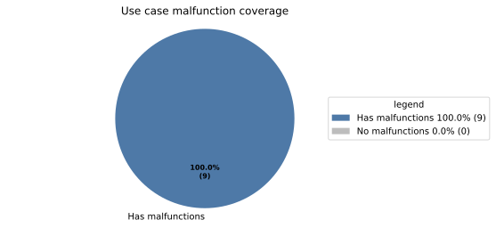
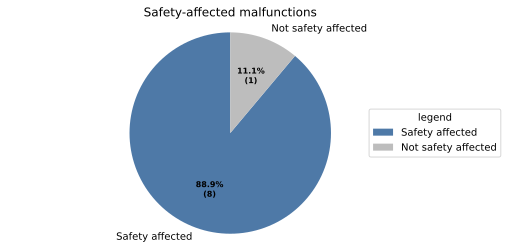
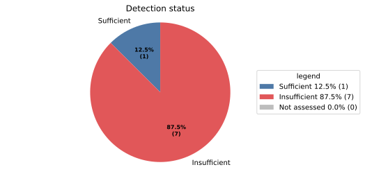
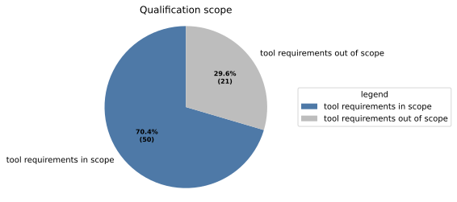
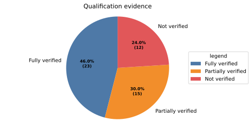

Doc-as-Code Tool Verification Report#
This page is the authoritative Tool Verification Report for the S-CORE Docs-as-Code tool. It records the classification of intended usage, potential malfunctions, safety impact and detection, together with qualification evidence and lifecycle state.
Introduction#
Scope and purpose#
The S-CORE Docs-as-Code tool (Bazel module score_docs_as_code) builds HTML
documentation from RST/Markdown sources, including process descriptions,
requirements, and traceability data. It validates the sources with the S-CORE
extensions and metamodel.
Inputs and outputs#
Inputs: RST/Markdown sources, Sphinx configuration, the S-CORE metamodel, Bazel build files, source-code links, and test results.
Outputs: HTML documentation, traceability data (
needs.json), and coverage and linkage statistics (metrics.json).
flowchart LR
sources["RST/Markdown sources"] --> tool["S-CORE Docs-as-Code"]
config["Configuration and metamodel"] --> tool
links["Source-code links"] --> tool
tests["Test results"] --> tool
tool --> html["HTML documentation"]
tool --> needs["needs.json"]
tool --> metrics["metrics.json"]
Available information#
Repository: eclipse-score/docs-as-code
Documentation: https://eclipse-score.github.io/docs-as-code/v8.1.2/
Bazel module:
score_docs_as_code
Installation and integration#
The tool is consumed as a Bazel module and integrated through the repository’s
documentation build targets. The evaluated configuration is the one defined by
the repository’s MODULE.bazel, BUILD files, Sphinx configuration, and
S-CORE metamodel. The relevant checks are run through //:docs_check and
the associated documentation and traceability targets.
Environment#
The evaluation runs in the repository’s supported Bazel environment on Linux, using the configured Sphinx, Python, and diagram-generation toolchains.
Report record#
Doc-as-Code
|
status: evaluated
|
||||
Evaluates the S-CORE Docs-as-Code tool for building and checking documentation and traceability data from RST/Markdown sources. |
|||||
Purpose and intended use#
Generated from linked report records.
The tool is evaluated for the following intended use cases. The use case title is the concise statement of the project context in which the tool is used; the detailed evaluation is shown in the sections below.
Enforce document types and attributes (tool_usecase__docs_as_code__metamodel): Enforce document types and mandatory attributes such as id, status, security, safety, and realizes. See, for example, gd_req__doc_attr_status, gd_req__req_attr_uid, gd_req__req_attr_safety, gd_req__arch_attr_safety, and gd_req__req_check_mandatory.
Enforce safety-critical links (tool_usecase__docs_as_code__safety_links): Enforce that links between safety-relevant needs preserve the required safety relationships. See gd_req__req_linkage_safety.
Calculate requirement coverage (tool_usecase__docs_as_code__coverage): Count, per requirement type, the requirements carrying a
testlinkand compute link-coverage percentages. See gd_req__verification_reporting.Generate architecture diagrams (tool_usecase__docs_as_code__architecture): Generate architecture diagrams. See gd_req__arch_viewpoints.
Resolve testcase verification links (tool_usecase__docs_as_code__test_linkage): For each
testcaseneed, resolve itspartially_verifies/fully_verifiesreferences against the needs set. See gd_req__req_attr_testlink and gd_req__verification_reporting.Validate testcase references (tool_usecase__docs_as_code__test_refs): Check that test references are present and point to the intended requirements. See gd_req__req_attr_testlink.
List assumptions of use (tool_usecase__docs_as_code__assumptions): Use
needtableto communicate safety-critical assumptions of use in safety manuals. See gd_guidl__saf_man and wp__platform_safety_manual.Generate traceability backlinks (tool_usecase__docs_as_code__backlinks): Generate correct backlinks for links between Needs items to provide bi-directional traceability. See doc_concept__general_traceability.
Generate HTML documentation (tool_usecase__docs_as_code__generation): Generate complete and correct HTML apart from the aspects covered by the other use cases. See gd_req__doc_attributes_manual and gd_req__doc_attr_status.
Conclusion#
Generated from linked report records.
The generated conclusion is summarized from the owned
potential_tool_malfunction records:
Safety:
8/9potential tool malfunctions affect safety →safety_affected: YES.Detection:
7/8safety- relevant malfunctions have insufficient detection →tcl: LOW.Qualification: → qualification of
50tool requirements is required.Testcase coverage:
0/7qualification-relevant malfunctions are fully covered by passed, fully-verifying testcases.





Tool verification graph#
Generated from linked report records.
The box labels show the Need type. Colors distinguish the report, tool requirements, use cases, and potential malfunctions.
---
config:
layout: elk
securityLevel: loose
---
flowchart LR
classDef report fill:#D5E8D4,stroke:#82B366,color:#000
classDef requirement fill:#DAE8FC,stroke:#6C8EBF,color:#000
classDef usecase fill:#E1D5E7,stroke:#9673A6,color:#000
classDef malfunction fill:#F8CECC,stroke:#B85450,color:#000
report["Tool Verification Report (doc_tool)"]
requirements["Tool requirements (tool_req)"]
class report report
class requirements requirement
click report href "#doc_tool__score_docs_as_code"
click requirements href "#tool-qualification-matrix"
usecase_1["Enforce document types and attributes (tool_usecase)"]
class usecase_1 usecase
report --> usecase_1
click usecase_1 href "#tool_usecase__docs_as_code__metamodel"
usecase_1_malfunction_1["Invalid document passes metamodel checks (potential_tool_malfunction)"]
class usecase_1_malfunction_1 malfunction
usecase_1 --> usecase_1_malfunction_1
click usecase_1_malfunction_1 href "#potential_tool_malfunction__docs_as_code__m1"
usecase_1_malfunction_1 -->|violates| requirements
usecase_2["Enforce safety-critical links (tool_usecase)"]
class usecase_2 usecase
report --> usecase_2
click usecase_2 href "#tool_usecase__docs_as_code__safety_links"
usecase_2_malfunction_1["Unsafe link passes validation (potential_tool_malfunction)"]
class usecase_2_malfunction_1 malfunction
usecase_2 --> usecase_2_malfunction_1
click usecase_2_malfunction_1 href "#potential_tool_malfunction__docs_as_code__m2"
usecase_2_malfunction_1 -->|violates| requirements
usecase_3["Calculate requirement coverage (tool_usecase)"]
class usecase_3 usecase
report --> usecase_3
click usecase_3 href "#tool_usecase__docs_as_code__coverage"
usecase_3_malfunction_1["Requirement coverage is wrong (potential_tool_malfunction)"]
class usecase_3_malfunction_1 malfunction
usecase_3 --> usecase_3_malfunction_1
click usecase_3_malfunction_1 href "#potential_tool_malfunction__docs_as_code__m3"
usecase_3_malfunction_1 -->|violates| requirements
usecase_4["Generate architecture diagrams (tool_usecase)"]
class usecase_4 usecase
report --> usecase_4
click usecase_4 href "#tool_usecase__docs_as_code__architecture"
usecase_4_malfunction_1["Architecture diagram is wrong (potential_tool_malfunction)"]
class usecase_4_malfunction_1 malfunction
usecase_4 --> usecase_4_malfunction_1
click usecase_4_malfunction_1 href "#potential_tool_malfunction__docs_as_code__m4"
usecase_5["Resolve testcase verification links (tool_usecase)"]
class usecase_5 usecase
report --> usecase_5
click usecase_5 href "#tool_usecase__docs_as_code__test_linkage"
usecase_5_malfunction_1["Requirement appears tested when it is not (potential_tool_malfunction)"]
class usecase_5_malfunction_1 malfunction
usecase_5 --> usecase_5_malfunction_1
click usecase_5_malfunction_1 href "#potential_tool_malfunction__docs_as_code__m5"
usecase_5_malfunction_1 -->|violates| requirements
usecase_6["Validate testcase references (tool_usecase)"]
class usecase_6 usecase
report --> usecase_6
click usecase_6 href "#tool_usecase__docs_as_code__test_refs"
usecase_6_malfunction_1["Test reference is missing or outdated (potential_tool_malfunction)"]
class usecase_6_malfunction_1 malfunction
usecase_6 --> usecase_6_malfunction_1
click usecase_6_malfunction_1 href "#potential_tool_malfunction__docs_as_code__m6"
usecase_6_malfunction_1 -->|violates| requirements
usecase_7["List assumptions of use (tool_usecase)"]
class usecase_7 usecase
report --> usecase_7
click usecase_7 href "#tool_usecase__docs_as_code__assumptions"
usecase_7_malfunction_1["Assumption of use is missing or wrong (potential_tool_malfunction)"]
class usecase_7_malfunction_1 malfunction
usecase_7 --> usecase_7_malfunction_1
click usecase_7_malfunction_1 href "#potential_tool_malfunction__docs_as_code__m7"
usecase_7_malfunction_1 -->|violates| requirements
usecase_8["Generate traceability backlinks (tool_usecase)"]
class usecase_8 usecase
report --> usecase_8
click usecase_8 href "#tool_usecase__docs_as_code__backlinks"
usecase_8_malfunction_1["Backlink is wrong or missing (potential_tool_malfunction)"]
class usecase_8_malfunction_1 malfunction
usecase_8 --> usecase_8_malfunction_1
click usecase_8_malfunction_1 href "#potential_tool_malfunction__docs_as_code__m8"
usecase_8_malfunction_1 -->|violates| requirements
usecase_9["Generate HTML documentation (tool_usecase)"]
class usecase_9 usecase
report --> usecase_9
click usecase_9 href "#tool_usecase__docs_as_code__generation"
usecase_9_malfunction_1["HTML output is incomplete or wrong (potential_tool_malfunction)"]
class usecase_9_malfunction_1 malfunction
usecase_9 --> usecase_9_malfunction_1
click usecase_9_malfunction_1 href "#potential_tool_malfunction__docs_as_code__m9"
Evaluation overview#
Generated from linked report records.
Use case Capability being evaluated. |
Potential malfunction Failure mode if the capability is wrong. |
Safety affected Can this affect safety? |
Safety measures Measures used during normal operation. |
Detection sufficient Detected before the output is relied on? |
SCORE TCL Per-malfunction classification. |
|---|---|---|---|---|---|
Enforce document types and attributes
|
Invalid document passes metamodel checks
|
YES |
PR review |
NO |
LOW |
Enforce safety-critical links
|
Unsafe link passes validation
|
YES |
PR review |
NO |
LOW |
Calculate requirement coverage
|
Requirement coverage is wrong
|
YES |
— |
NO |
LOW |
Generate architecture diagrams
|
Architecture diagram is wrong
|
YES |
PR review includes architecture inspection |
YES |
HIGH |
Resolve testcase verification links
|
Requirement appears tested when it is not
|
YES |
— |
NO |
LOW |
Validate testcase references
|
Test reference is missing or outdated
|
YES |
PR review |
NO |
LOW |
List assumptions of use
|
Assumption of use is missing or wrong
|
YES |
PR review |
NO |
LOW |
Generate traceability backlinks
|
Backlink is wrong or missing
|
YES |
— |
NO |
LOW |
Generate HTML documentation
|
HTML output is incomplete or wrong
|
NO |
— |
— |
HIGH |
Tool qualification matrix#
Generated from linked report records.
The qualification matrix contains only safety-relevant malfunctions whose
detection is insufficient. Every such malfunction must violate at least one
tool_req. Requirements are grouped by their strongest available testcase
link: full verification, partial verification without full verification, or no
verification link.
Use case |
Potential malfunction |
Fully verified tool requirements |
Partially verified tool requirements |
Unverified tool requirements |
|---|---|---|---|---|
Enforce document types and attributes
|
Invalid document passes metamodel checks
|
|||
Enforce safety-critical links
|
Unsafe link passes validation
|
|||
Calculate requirement coverage
|
Requirement coverage is wrong
|
— |
— |
|
Resolve testcase verification links
|
Requirement appears tested when it is not
|
— |
||
Validate testcase references
|
Test reference is missing or outdated
|
— |
— |
|
List assumptions of use
|
Assumption of use is missing or wrong
|
— |
||
Generate traceability backlinks
|
Backlink is wrong or missing
|
— |
— |
Details#
The safety evaluation uses the following shared facts:
Build/CI behavior: Builds run with
-W; any warning trips CI. The safety-relevant danger is the silent failure — a missing warning or a wrong output published undetected. A loud CI abort is safe: no wrong output enters the baseline.PR Review: Repository contents are the source of truth and every change is reviewed by a committer (rl__committer, doc_concept__wp_inspections). Still, for silent wrong outputs the gated CI stays green.
Derived-view: The rendered HTML output is a derived view; the authoritative safety artifacts are mostly the source-controlled work products. There are two exceptions, the architecture views and backlinks. Rendering/preview defects affect reviewer convenience, not safety evidence.
Each of the following tool capabilities is evaluated as an intended use case with its corresponding potential malfunction.
Enforce document types and attributes
|
|||||||||||||||||||||||||||||
Enforce document types and mandatory attributes such as id, status, security, safety, and realizes. See, for example, gd_req__doc_attr_status, gd_req__req_attr_uid, gd_req__req_attr_safety, gd_req__arch_attr_safety, and gd_req__req_check_mandatory.
|
|||||||||||||||||||||||||||||
Enforce safety-critical links
|
|||||||||||||||||||||||||||||
Enforce that links between safety-relevant needs preserve the required safety relationships. See gd_req__req_linkage_safety.
|
|||||||||||||||||||||||||||||
Calculate requirement coverage
|
|||||||||||||||||||||||||||||
Count, per requirement type, the requirements carrying a
|
|||||||||||||||||||||||||||||
Generate architecture diagrams
|
|||||||||||||||||||||||||||||
Generate architecture diagrams. See gd_req__arch_viewpoints.
|
|||||||||||||||||||||||||||||
Resolve testcase verification links
|
|||||||||||||||||||||||||||||
For each
|
|||||||||||||||||||||||||||||
Validate testcase references
|
|||||||||||||||||||||||||||||
Check that test references are present and point to the intended requirements. See gd_req__req_attr_testlink.
|
|||||||||||||||||||||||||||||
List assumptions of use
|
|||||||||||||||||||||||||||||
Use
|
|||||||||||||||||||||||||||||
Generate traceability backlinks
|
|||||||||||||||||||||||||||||
Generate correct backlinks for links between Needs items to provide bi-directional traceability. See doc_concept__general_traceability.
|
|||||||||||||||||||||||||||||
Generate HTML documentation
|
|||||||||||||||||||||||||||||
Generate complete and correct HTML apart from the aspects covered by the other use cases. See gd_req__doc_attributes_manual and gd_req__doc_attr_status.
|
|||||||||||||||||||||||||||||
Security evaluation#
The threat model reduces to a single class: source tampering. The tool has no runtime attack surface — it is a build-time Sphinx extension reading source-controlled inputs and writing generated output.
Threat identification |
Use case description |
Threats |
Impact on security? |
Impact security measures available? |
Impact security detection sufficient? |
Further additional security measure required? |
|---|---|---|---|---|---|---|
T1 |
Source tampering — applies to all tool use cases.
|
An attacker with write access tampers with sources, configuration, or
extension code to weaken/disable security checks or inject misleading
content into published output.
|
yes |
yes: PR review. |
yes |
no |